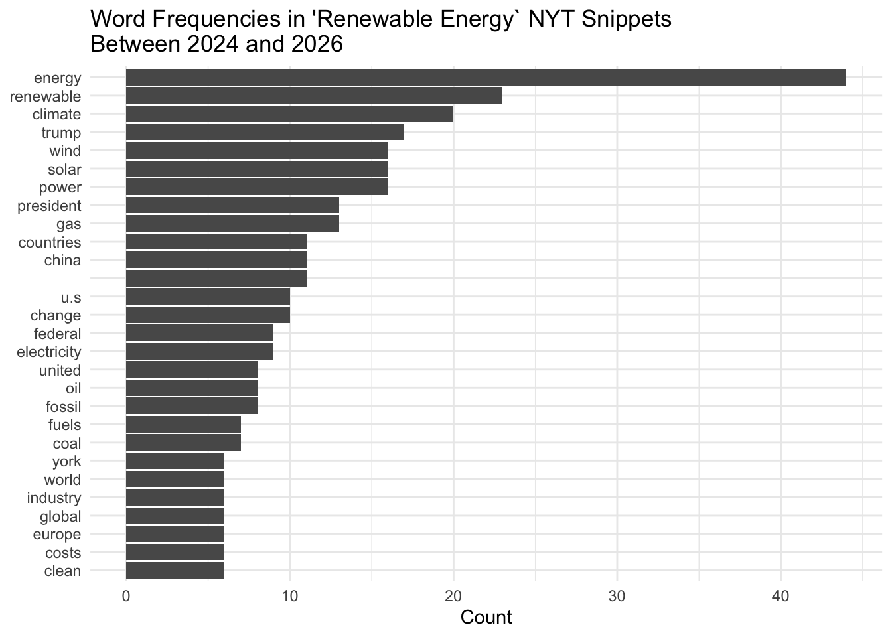
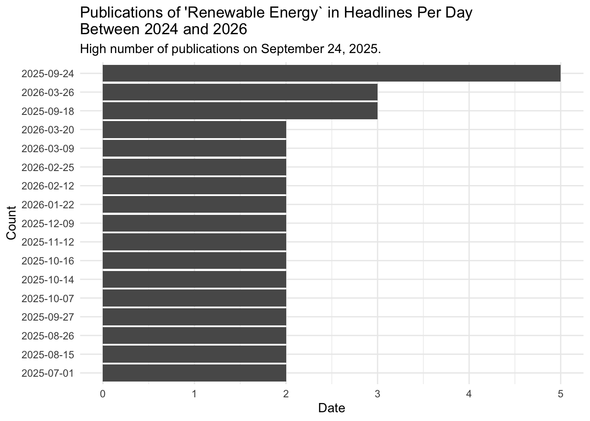
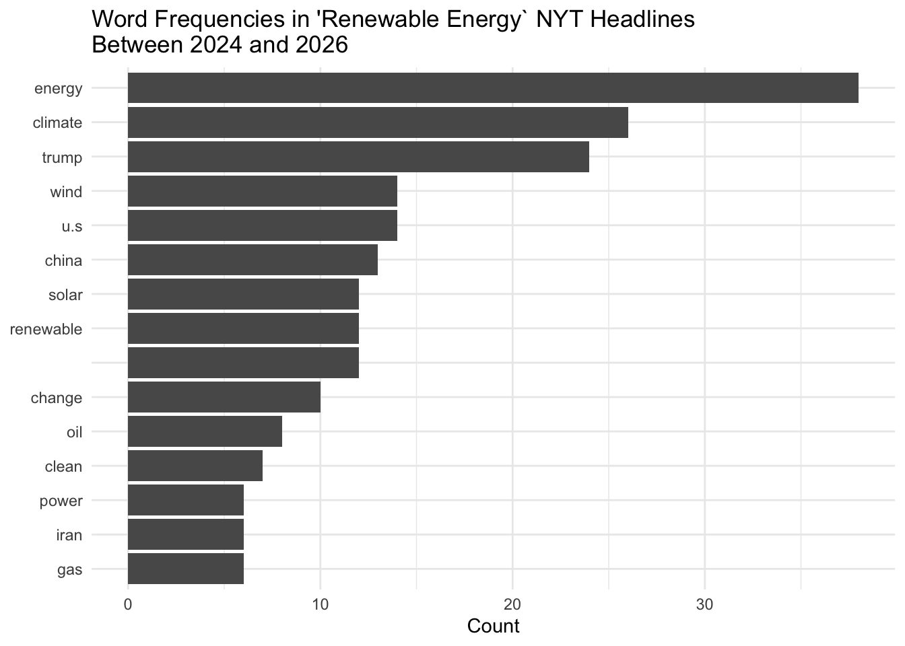

knitr::opts_chunk$set(echo = TRUE)
library(jsonlite) #convert results from API queries into R-friendly formats
library(tidyverse)
library(tidytext) #text data management and analysis
library(ggplot2) #plot word frequencies and publication dateshw1
Load Libraries
1. Create a free New York Times account
Here is my account’s API:
# API key from NYT account
API_KEY <- "KJQmoL1cLoUvouGAKTgFW5kOUHp3wI5XZJ8PIgQSu5EUZXoC"2. Pick an environmental term of interest to you and use the {jsonlite} package to query the API. P
ick something high profile enough and over a large enough time frame that your query yields enough articles for an interesting examination.
I am looking into the broad category of renewable energy.
# Querying "renewable energy" in the New York Times API
searchQ = URLencode("renewable energy")
url = paste0('https://api.nytimes.com/svc/search/v2/articlesearch.json?q=', searchQ,
'&begin_date=20240401&end_date=20260401&api-key=', API_KEY)
# Sending request to the NYT API & parse the JSON response into an R object
t = fromJSON(url, flatten = TRUE)Exploring the results from querying “renewable energy”.
(The outputs of this exploratory code chunk was turned off due to extensive data exploration).
# Object type
class(t) # list
# Dimensions
dim(t) # NULL
# Variables
names(t)
# Article Matches
t$response$meta$hits
# Broad info about t
str(t)However, in class, we did this method (^^) then did not use this data. Instead, we made the API function below in order to query the data. I am confused on the data formatting and how to extract information in the first method.
Get the API function we created in class:
source(here::here("R", "nytAPI_function.R"))Use the function to query the term renewable energy between April 4, 2024 and April 4, 2026 in the NYT.
results <- nytAPI_function(term1 = "renewable energy", begin_date = "20240401", end_date = "20260401", api = API_KEY)
term1 <- "renewable energy"
write.csv(results, paste0("NYT-", term1,".csv"))
nytDat <- results3. Recreate the publications per day and word frequency plots using the snippets.
Investigating the publish dates.
Looking at how many publications there were per day.
# Wrangle and plot `created_time` in the snippets
nytDat %>%
filter(lengths(snippet) > 0) %>% # Filter for when there is snippet information
mutate(date = as.Date(created_time)) %>% # Change created_time datatype to date
group_by(date) %>% # Look at count per day
summarise(count = n()) %>%
dplyr::arrange(desc(count)) %>%
filter(count >= 2) %>%
# Plot
ggplot() +
geom_col(aes(x=reorder(date, count), y=count)) +
coord_flip() +
labs(x = "Count",
y = "Date",
title = "Publications of 'Renewable Energy` in Snippets Per Day\nBetween 2024 and 2026",
subtitle = "High number of publications on September 24, 2025.") +
theme_minimal()Investigating word frequency in the snippets (nytDat$snippet).
First, we need to clean the tokens: remove stop words, numbers, and possessives
# Look at every words in the snippet column
tokenized_snippet <- nytDat %>%
tidytext::unnest_tokens(word, snippet)
# Remove the stop_words (EX: the, a, at, in)
tokenized_snippet <- tokenized_snippet %>%
anti_join(stop_words, by = join_by(word))
# Remove numbers
clean_tokens_snippet <- str_remove_all(tokenized_snippet$word, "[:digit:]")
# Remove possessives
clean_tokens_snippet <- gsub("’s", '', clean_tokens_snippet)
# Add edits back to tokenized df
tokenized_snippet$clean <- clean_tokens_snippetAfter cleaning the tokens, we can now plot the word frequency!
tokenized_snippet %>%
count(clean, sort = TRUE) %>% # frequency / count
mutate(clean = reorder(clean, n)) %>%
filter(n > 5) %>% # All counts above 5
# Plot
ggplot(aes(n, clean)) +
geom_col() +
labs(y = NULL,
x = "Count",
title = "Word Frequencies in 'Renewable Energy` NYT Snippets\nBetween 2024 and 2026") +
theme_minimal()
4. Recreate the publications per day and word frequency plots using the headlines variable.
The headlines and snippets are from the same publication. Therefore, investigating headlines vs snippets has the same the publications per date.
nytDat %>%
filter(lengths(headline) > 0) %>% # Filter for when there is headline information
mutate(date = as.Date(created_time)) %>% # Change created_time datatype to date
group_by(date) %>% # Look at count per day
summarise(count = n()) %>%
dplyr::arrange(desc(count)) %>%
filter(count >= 2) %>%
# Plot
ggplot() +
geom_col(aes(x=reorder(date, count), y=count)) +
coord_flip() +
labs(x = "Count",
y = "Date",
title = "Publications of 'Renewable Energy` in Headlines Per Day\nBetween 2024 and 2026",
subtitle = "High number of publications on September 24, 2025.") +
theme_minimal()
The word frequency is different between headlines and snippets. Let’s see if there is a big difference!
First, we need to clean the tokens: remove stop words, numbers, and possessives
# Look at every words in the snippet column
tokenized_headline <- nytDat %>%
tidytext::unnest_tokens(word, headline)
# Remove the stop_words (EX: the, a, at, in)
tokenized_headline <- tokenized_headline %>%
anti_join(stop_words, by = join_by(word))
# Remove numbers
clean_tokens_headline <- str_remove_all(tokenized_headline$word, "[:digit:]")
# Remove possessives
clean_tokens_headline <- gsub("’s", '', clean_tokens_headline)
# Add edits back to tokenized df
tokenized_headline$clean <- clean_tokens_headlineAfter cleaning the tokens, we can now plot the word frequency for headlines!
tokenized_headline %>%
count(clean, sort = TRUE) %>%
mutate(clean = reorder(clean, n)) %>%
filter(n > 5) %>%
ggplot(aes(n, clean)) +
geom_col() +
labs(y = NULL,
x = "Count",
title = "Word Frequencies in 'Renewable Energy` NYT Headlines\nBetween 2024 and 2026") +
theme_minimal()
4. Pt2 Compare the distributions of word frequencies between the snippet and headlines. Do you see any differences? Why might this be?
The publications per day are the same for snippets and headlines because they are part of the same publication.
For the word frequency, the top words in both lists are similar: ‘climate’, ‘trump’, ‘wind’, ‘solar’, ‘u.s’, and ‘china’. However, there are more frequent words in the snippets. There are 27 frequent words (occurring more than 5 times) in the snippets. In the headlines, there is only 14 frequent words occurring more than 5 times. This is most likely because the snippets are longer with more words. The frequency numbers are similar between the lists as author try not to be repetitive with word choice. For instance, even though snippets are longer, the author is not trying to say ‘climate’ 10 times in one snippet.